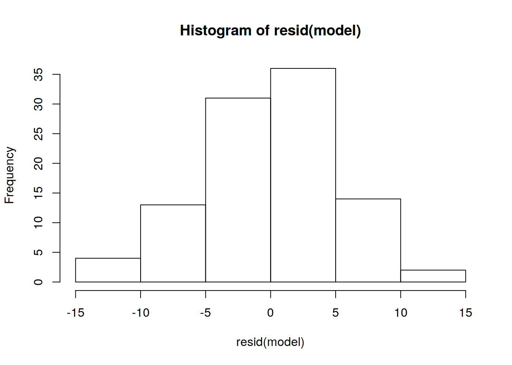
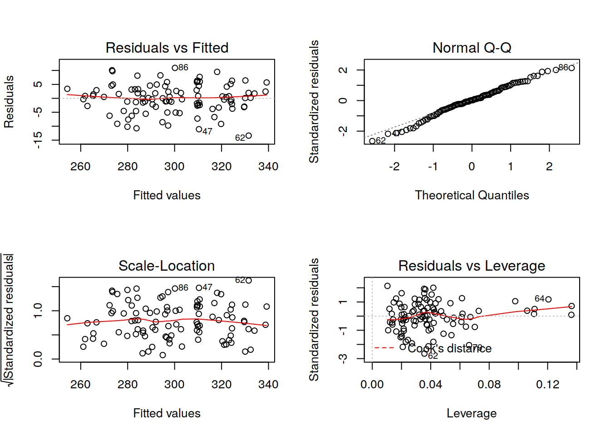
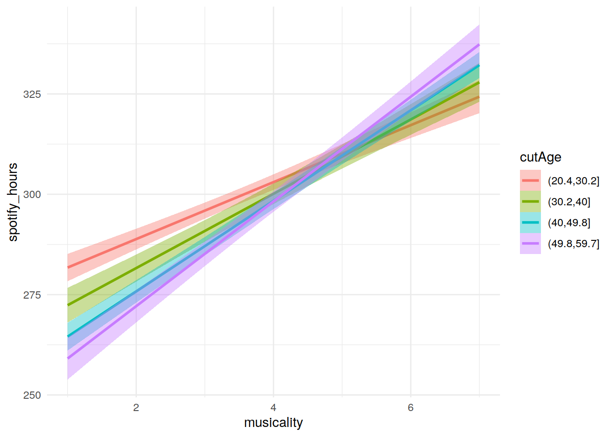
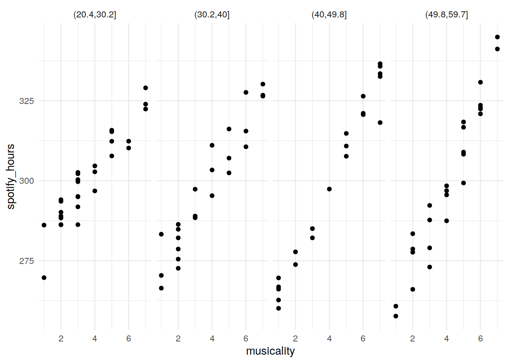
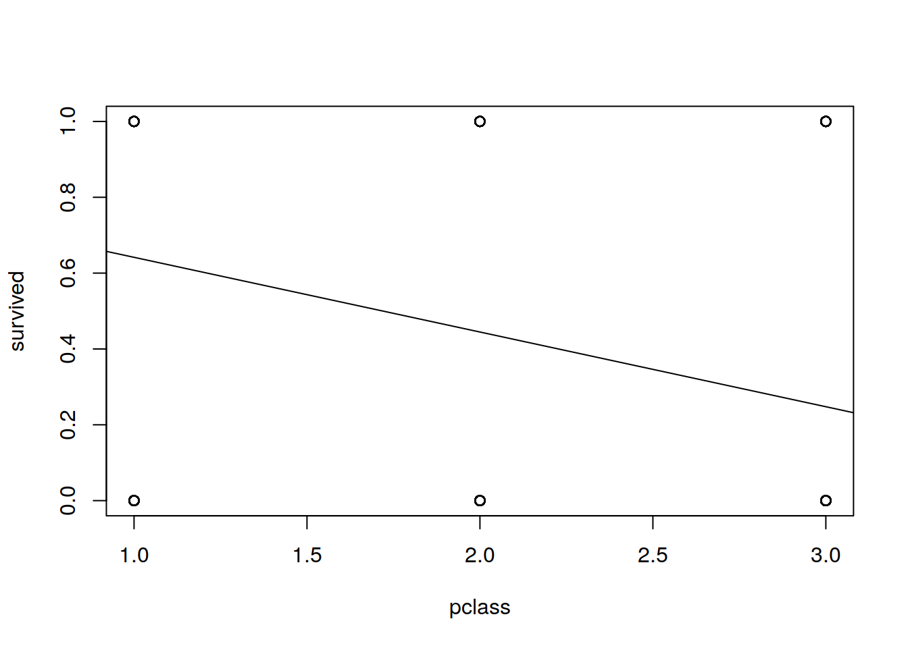

Chapter 9 Lab 9 - Interactions and GLM"
Today’s lab is primarily focused on extending our knowledge/experience of conducting and interpreting linear models.
9.1 Interactions
9.1.1 Specifying interactions in R
In the lecture last week, you were introduced to interactions in linear models. Therefore we need to know how to tell R to also fit interaction terms in our calls to lm().
lm(y ~ x1)
lm(y ~ x1 + x2)So far, these are the types of linear models we have been asking R to fit. In the first example, the command tells R we want to predict y using the explanatory variable x1. The second example extends this by also using x2 as an explanatory variable. To also ask for R to fit the interaction between x1 and x2, we can execute:
lm(y ~ x1 + x2 + x1:x2)We use a colon to separate two terms to indicate we want to fit the interaction between these terms. An alternative method is:
lm(y ~ x1 * x2)Using the * tells R to fit the full model using these variables: each of the variables individually and the interaction term.
9.1.2 Simulating data
Today’s exercise is a little different: We’re going to analyse a dataset, but we’re going to build it ourselves.
The purpose if this is because we can define the relationships between the variables, and so link this more clearly to our regression formula (\(y_i=b_0+b_1x_{1i}+b_2x_{2i}+{}...{}+b_nx_{ni}+\epsilon_i\)) and model output.

Task: Create a data frame to hold your data with participant labels for 100 people. To do this, you can simple use the colon : to make a sequence from 1 to 100, and wrap the whole thing in factor() to make sure R knows that it is categorical.
my.data <- data.frame(ppt = factor(1:100))Task: Now let’s add in some information about these participants. Give some values for their age, and their musicality (some measure of how interested the participant is in music generally).
Make up some values that vary plausibly for each column. So, for example, if you thought that age was best expressed in years and our participants’ ages should vary uniformly from 20 to 60, you might type:
my.data$age <- runif(100, 20, 60)but this is only an example. You might assume that the age of participants is normally distributed; you might want to express it in months; and so on.
Similarly, you can define musicality however you like: You could use rnorm() or some other random function to assign values to it; or you might want to sample() (with replacement) from a strict set of numbers such as 1:7, for example.
## Here are some simple versions based on the hints above:
my.data$musicality <- sample(c(1:7), 100, replace = TRUE)Task: Have a look at the dataset you have created: my.data. Have a look at a summary of the variables you have created: summary(my.data). Do they look sensible? Most likely yes, but make sure nothing stands out as strange.
## here's the summary based on the commands above:
summary(my.data)## ppt age musicality
## 1 : 1 Min. :20.42 Min. :1.00
## 2 : 1 1st Qu.:28.72 1st Qu.:2.00
## 3 : 1 Median :39.59 Median :4.00
## 4 : 1 Mean :39.93 Mean :3.89
## 5 : 1 3rd Qu.:50.11 3rd Qu.:6.00
## 6 : 1 Max. :59.62 Max. :7.00
## (Other):94Task: Create a variable called spotify_hours in your data frame. This will represent the number of hours each participant spent listening to spotify over the course of a year. We want this to be a function of musicality and age. In other words, you’re being asked: `What is the (fictional) way in which age and musicality predict the numbers of hours that people listen to spotify over the course of a year?’
To do this, you’ll need to think about regression equations in general, and in particular, about interaction terms. How do age and musicality interact? Will old musical people listen to spotify less than young musical people? And so on. The exact formula is up to you but, it’s a linear equation, so it should be something like:
my.data$spotify_hours <- ... + (... * my.data$age) + (... * my.data$musicality) +
(... * my.data$age * my.data$musicality)In this equation, the …’s represent spaces where \(b_0\), \(b_1\), \(b_2\), and so on (see slides 36-37 from lecture 8). For our example, the following might work:
my.data$spotify_hours <- 300 - 1 * my.data$age +
2 * my.data$musicality +
.2 * my.data$age * my.data$musicality
#this would mean that someone who is 20, and who is very musical (scores 7),
#listens to spotify for 300-(1*20)+(2*7)+(.2*20*7) = 322 hours
#(that's a little under an hour a day).
#We've said that for every year older, people listen 1 hour less, and for every
#unit of musicality, people listen 2 hours more.
#We've also stated that for every year older, there is an extra .2 effect of musicality.
#(maybe older musical people have more time to listen? younger people are all stuck in statistics courses!)
9.1.3 Visualising interactions
Task: Have a look at your data. There are various ways of doing this! For a fancy 3D-plot you can install the plotly package and try the code below7, and then move the resulting graph around with your mouse.
library(plotly)
# if you don't include the '~'s, the axes will be labelled 'X', 'y', and 'z'.
with(my.data, plot_ly(x = ~age, y = ~musicality, z = ~spotify_hours))If you are having problems with plotly or want to stay within 2-dimensions, try a flat plot, like this:
plot(my.data[, c('age', 'musicality', 'spotify_hours')])Task: Does everything look relatively plausible? If not, you could start again at Task 4 (or earlier), changing values or the formula to create spotify_hours until you’re happy with the result.
The variable spotify_hours we’ve created above is a bit like fitted values - based on specific choice of \(b_0\), \(b_1\), etc, we’ve perfectly explained spotify hours in terms of age and musicality. But real data is noisy - even when the relationship is extremely strong the real values will not lie perfectly on the ‘line of best fit’.
Task: Add some noise to spotify_hours
hint: ‘noise’ is random, and the linear model assumes that residual (\(\epsilon_i\)) is normally distributed.
my.data$spotify_hours <- my.data$spotify_hours + rnorm(100, 0, 5)
9.1.4 Modelling interactions
Task: Test how age, musicality, and their interaction predict spotify_hours. Examine your model. How close are the coefficients to the \(b\) values that you initially entered into the equation?
model <- lm(spotify_hours ~ age * musicality, data = my.data)
summary(model)##
## Call:
## lm(formula = spotify_hours ~ age * musicality, data = my.data)
##
## Residuals:
## Min 1Q Median 3Q Max
## -13.3758 -2.7977 0.1205 3.2512 10.9172
##
## Coefficients:
## Estimate Std. Error t value Pr(>|t|)
## (Intercept) 301.34010 4.30198 70.047 < 2e-16 ***
## age -1.04024 0.10544 -9.866 2.89e-16 ***
## musicality 1.42275 1.01520 1.401 0.164
## age:musicality 0.21569 0.02412 8.942 2.79e-14 ***
## ---
## Signif. codes: 0 '***' 0.001 '**' 0.01 '*' 0.05 '.' 0.1 ' ' 1
##
## Residual standard error: 5.144 on 96 degrees of freedom
## Multiple R-squared: 0.942, Adjusted R-squared: 0.9402
## F-statistic: 519.8 on 3 and 96 DF, p-value: < 2.2e-16Task: Check the model assumptions. Are the residuals normal? Do the other diagnostics look sensible?
hist(resid(model))
par(mfrow = c(2, 2)) # to plot all of the below in one window
plot(model)
9.1.4 Optional
Task: Re-run the equation you created at Task 4 (this resets the spotify_hours variable to the exact fitted values without the noise (\(\epsilon\))). Instead of adding a normally distributed residual (like you did in task 6), try adding one which is not. Then re-run the regression and check the model assumptions. What has changed?
Task: If you selected a continuous measure of musicality you were working with a continuous\(\times\)continuous interaction. A good way to visualise this is to ‘bin’ the data based on one of the explanatory variables. In the example above we might create a grouped age variable that split age into 4 or 5 equal sized categories (the function cut() will help you to achieve this). Construct a plot showing the relationship of spotify_hours and musicality for 4 different age-groups. This could be a different line for each age-group, or a different ‘facet’ for each.
The code below introduces two new things we might not have come across within ggplot2: geom_smooth() and facet_grid().
*Tip:* Remember plotting the confidence interval around the regression line in last week’s lab? geom_smooth() saves so much time!
# A few different examples of illustrating this:
my.data$cutAge <- cut(my.data$age, 4)
#a ggplot
library(ggplot2)
ggplot(data = my.data, aes(x = musicality, y = spotify_hours, col=cutAge, fill=cutAge)) +
geom_smooth(method="lm", se=T)+
theme_minimal()
ggplot(data = my.data, aes(x = musicality, y = spotify_hours)) +
geom_point()+
facet_grid(~cutAge)+
theme_minimal()
9.2 Generalised Linear Model (GLM)
Okay, moving on from interactions, we’re now going to take a look at the generalised linear model, which you were introduced to in this weeks lecture (lecture 9).
Task: Load in the titanic data using the following code:
load(url("https://is.gd/rYCGR3"))In the lecture, we saw how to model the odds that an alien would be splatted by a disco ball given their quality of singing. Along similar lines, we’re now going to construct a model of the odds of someone surviving the sinking of the titanic, given factors such as age, sex, class of ticket etc.
| Variable | Description |
|---|---|
| passenger_id | ID of passenger |
| survived | Categorical indicating whether (1) or not (0) the passenger survived |
| pclass | Class of ticket (1,2,3) |
| name | Name of passenger |
| sex | Sex of passenger (‘male’/‘female’) |
| age | Age in year |
| sib_sp | Number of spouses and siblings on board |
| parch | Number of parents or children on board |
| ticket | Ticket code |
| fare | Ticket fare |
| cabin | Cabin number |
| embarked | Port of embarkation (C = Cherbourg, Q = Queenstown, S = Southampton) |
Task: Plot the survived variable against the pclass variable, and use abline() to add to this the line for a simple regression of survival by class of ticket.
with(titanic, plot(survived ~ pclass))
abline(lm(survived~pclass, data=titanic))
Task: Probability p(x) can’t be linear. Odds, ranging from 0 to Infinity, are calculated as \(p(x)/(1-p(x))\). Log-odds are more linear, and range from -Infinity to +Infinity.
If the probability of someone surviving is 0.6. What are the odds, and what are the log odds?
p=0.6
(p/(1-p)) # odds## [1] 1.5log(p/(1-p)) # log odds## [1] 0.4054651Task: Use glm() to model survival predicted by pclass. Remember to set family=binomial, and take a look at the coefficients using coef().
logit_mod <- glm(survived ~ pclass, data = titanic, family=binomial)
coef(logit_mod)## (Intercept) pclass
## 1.4467895 -0.85010679.2.1 Log-odds and predicted probabilities
Task: Where the equation for our linear model was \(y=b_0+b_1x\), for our logit model it is \(ln(\frac{p}{(1-p)})=b_0+b_1x\).
For the model we just ran, it is \(ln(\frac{p}{(1-p)})=1.45-0.85*pclass\).
We can construct these fitted values using the code below:
titanic$fit = 1.4467895 - 0.8501067*titanic$pclass
#or
titanic$fit = coef(logit_mod)[1] + coef(logit_mod)[2]*titanic$pclassTask: Remembering that these numbers are on the scale of log-odds, we can, get out the predicted probability of survival using the inverse logit \(p_i=\frac{e^L_i}{(1+e^L_i)}\) (this is the inverse of the log-odds formula \(L_i=log(\frac{p_i}{1-p_i}))\).
predicted_probs <- exp(titanic$fit) / (1 + exp(titanic$fit))And this is exactly what we get when we use the predict() function!
Note: we specify type="response" here, but if you use type="link" you get the log-odds which we just calculated.
titanic$p_surv <- predict(logit_mod, type="response")
#and check that they are the same using the all.equal() function
all.equal(predicted_probs, titanic$p_surv)## [1] TRUEMaximum likelihood estimation
How does the model find the coefficients? We’re no longer talking about minimising sums of squares, like we were with a continuous variable and lm(). This is also why we don’t have things like \(R^2\) for logit regression, because \(SS_\text{regression}/SS_\text{total}\) no longer makes sense in the context of 0s and 1s.
Instead, models are fitted use Maximum Likelihood Estimation (MLE) to work out the coefficients which maximise the likelihood of the observed data. (There’s a lot of info on MLE if you want to google it!)
9.2.2 Predicted vs Observed
Task: Now that we have our fitted values in the p_surv variable, we can compare those to the observed data.
Use the ifelse() function to assign values of 0 and 1 to the p_surv predictions based on whether they are above or below 0.5.
titanic$p_surv <- ifelse(titanic$p_surv > 0.5, 1, 0)Task: Create a table of these predictions against the survived variable (the observed data).
table(
actual = titanic$survived,
predicted = titanic$p_surv
)## predicted
## actual 0 1
## 0 469 80
## 1 206 1369.3 Your turn (Less guidance)
Task: What factors contribute to increased odds of survival for passengers on the titanic?
titanic_model <- glm(survived ~ age + sex + pclass + sib_sp + parch, data = titanic, family=binomial)Task: How does a passenger being male (relative to female) influence the odds of survival?
exp(coef(titanic_model))## (Intercept) age sexmale pclass sib_sp parch
## 275.2051697 0.9565700 0.0715638 0.2682218 0.6947680 0.9636555# 0.07 odds of survival for males relative femalesTask: Extra: Try doing a bit of googling to find the function which can quickly give you some confidence intervals for your betas.
# remember to exp()!
exp(confint(titanic_model))## Waiting for profiling to be done...## 2.5 % 97.5 %
## (Intercept) 97.35567063 832.4627665
## age 0.94104651 0.9716845
## sexmale 0.04603557 0.1089289
## pclass 0.20199683 0.3512246
## sib_sp 0.53799311 0.8843912
## parch 0.75718485 1.2146246If the plot disappears after a split-second, just click inside the RStudio plotting window and it should pop back up.↩